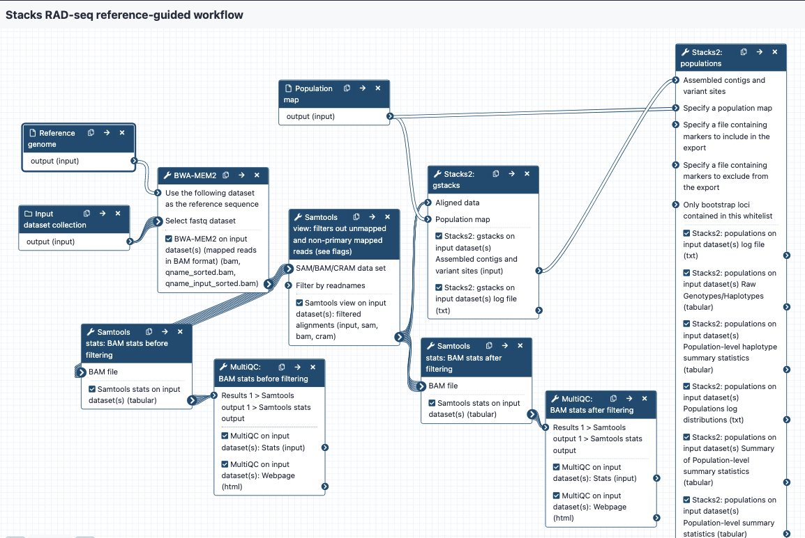

# workflow-ref-guided-stacks These workflows are part of a set designed to work for RAD-seq data on the Galaxy platform, using the tools from the Stacks program. Galaxy Australia: https://usegalaxy.org.au/ Stacks: http://catchenlab.life.illinois.edu/stacks/ ## Inputs * demultiplexed reads in fastq format, may be output from the QC workflow. Files are in a collection. * population map in text format * reference genome in fasta format ## Steps and outputs BWA MEM 2: * The reads are mapped to the reference genome; output in BAM format * The collection of bam files is named something like Map with BWA-MEM on collection 5 (mapped reads in BAM format) * Each of the bam files in the collection is named something like sample_CAAC Samtools stats before filtering: * These bam files are sent to Samtools stats to get statistics; these are then sent to MultiQC to provide a nice output. This is tagged as "bam stats before filtering" in the Galaxy history. * The "General Statistics" show how many reads were mapped - if there is a low mapping rate, it may be worth re-checking or repeating QC on the raw reads, or considering a different reference genome, or using a de novo approach. To see if many reads have been soft-clipped by Bwa mem (which may affect how well gstacks can work), look at the "Alignment Metrics" section, and the row with "Mapped bases (Cigar)". Hover over the dots to see sample names especially towards the left of the row - these have the least mapped reads. Samtools view: * This step filters out certain reads from the bam files. The default settings are to exclude reads if they are unmapped, if the alignment is not primary or is supplementary, if the read fails platform/vendor quality checks, and if the read is a PCR or optical duplicate. * The output bams are tagged with "filtered bams" in the Galaxy history. Samtools stats after filtering: * Filtered bams are sent again to samtools stats, and statistics to MultiQC, with the report tagged as "bam stats after filtering" in the Galaxy history. gstacks: * Filtered bams and a population map are sent to gstacks. The outputs are: * Catalog of loci in fasta format * Variant calls in VCF format * Note: some bam files cause errors here with gstacks. For example, the log file may say "Error, all records discard with file SampleXYZ.FASTQ.bam, Aborted". If this occurs, check the bam stats (as described above). Some of the options are to re-do QC on the raw reads, change settings for mapping reads in BWA MEM, and/or delete this sample/s from the population map and proceed to gstacks. The sample can still remain in the list of bam files but gstacks will only consider what is listed in the pop map. populations: * gstacks outputs and a population map are snet to the "populations" module. The outputs are: * Locus consensus sequences in fasta format * Snp calls, in VCF format * Haplotypes, in VCF format * Summary statistics 
{kind=link}